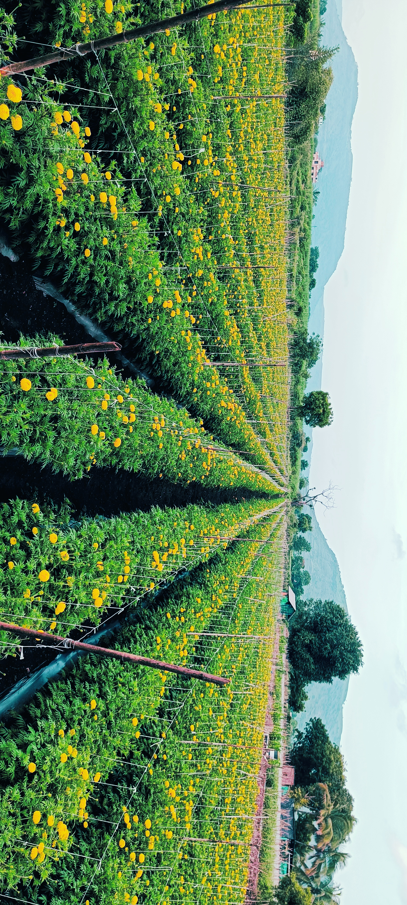
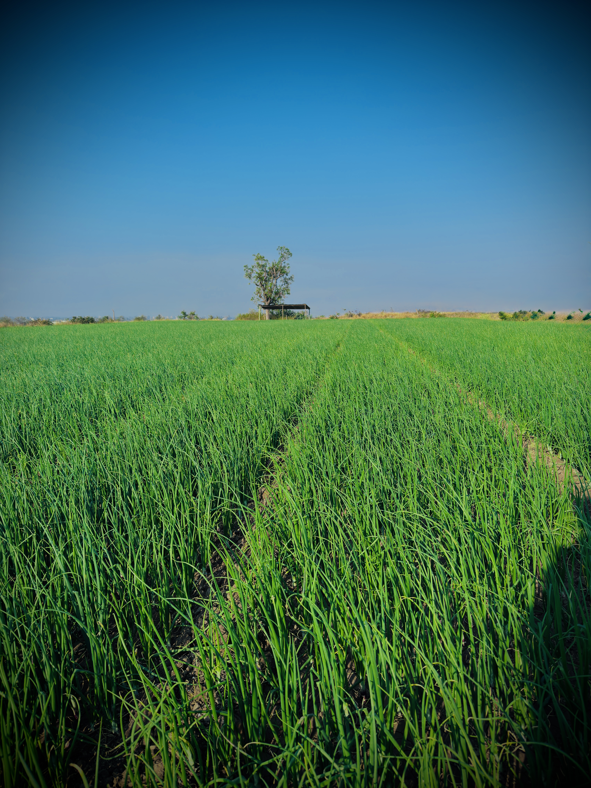
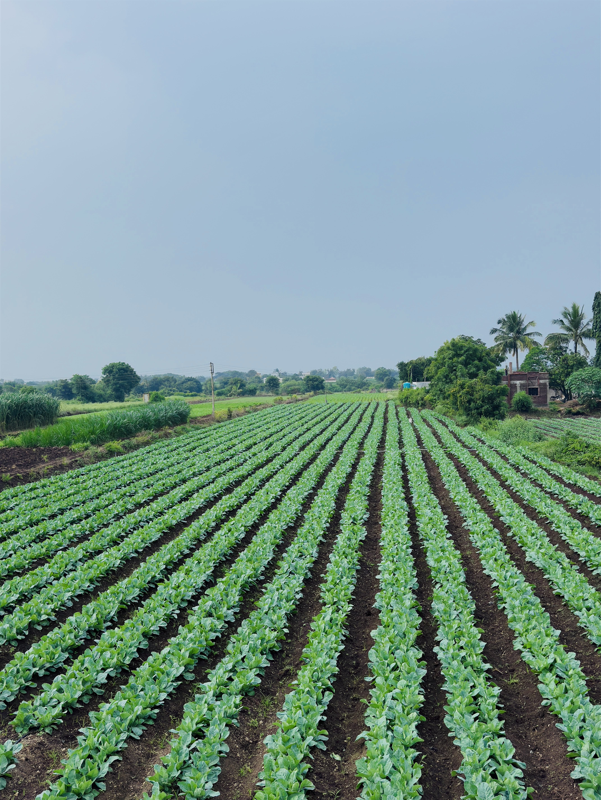
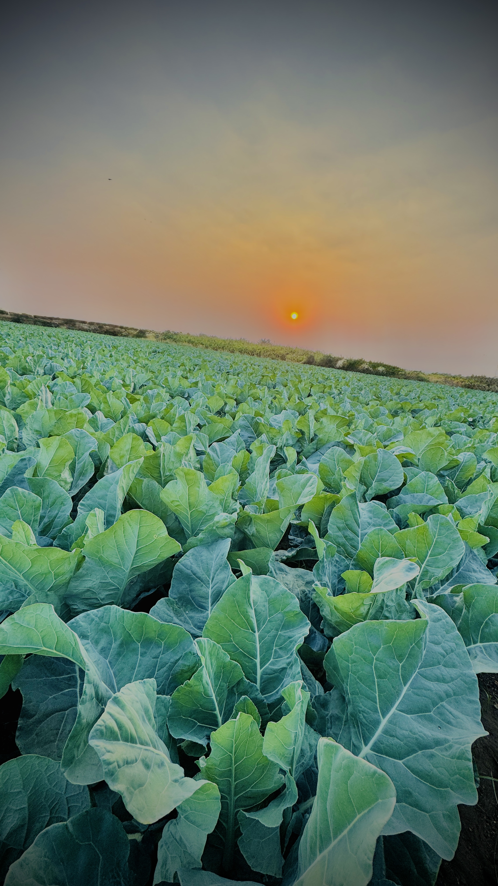
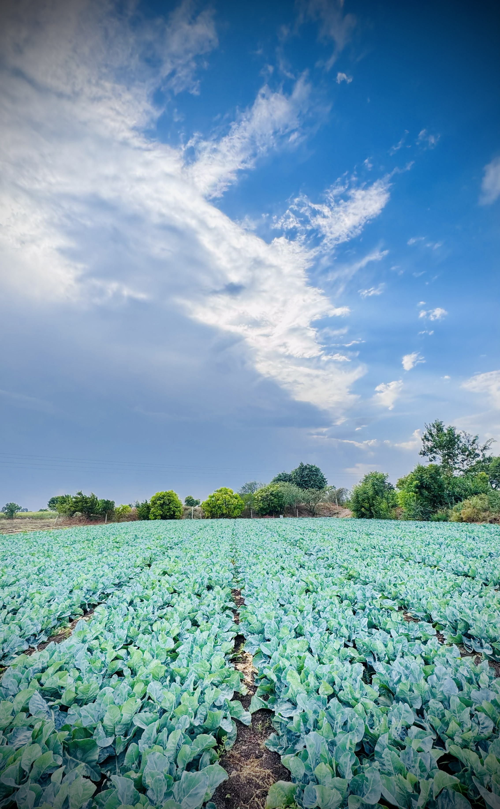
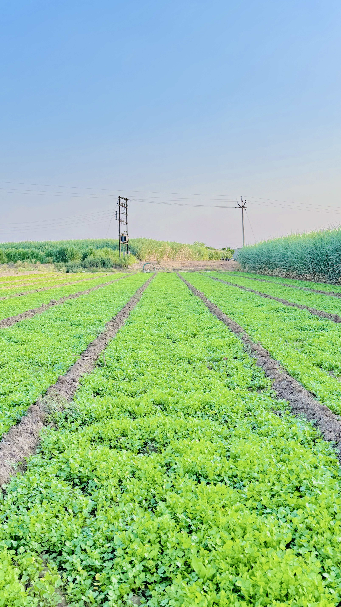

We combine scientific research, sustainable farming practices, and high-quality agricultural products to help farmers achieve healthier crops, better yield, and long-term success.
Research-backed nutrition and protection, tested for real field conditions.
From soil to harvest, one partner for nutrition, growth and protection.
On-ground support that speaks the language of the farmer, not the lab.
Consistent batch quality farmers can rely on, season after season.
Farmers Served
Acres Covered
Avg. Yield Increase
Formulations
Every field tells a story. Explore real farming moments where EcoFert products help farmers achieve healthier crops, stronger plants, and better harvests.






From preparing the soil to harvesting the final crop, EcoFert stands beside every farmer throughout the agricultural journey.
“Scientifically formulated products trusted by farmers for better growth, protection, and higher yield.”
— EcoFert Agri Solutions
“Since switching to EcoFert, our root development improved within weeks — the difference showed up at harvest.”
— Grape Grower, Nashik
“One partner for nutrition and protection means fewer inputs to manage and more consistent results every season.”
— Vegetable Farmer, Pune
.jpeg)